Casa
Juanito
Pescado y marisco a la española, al final de la playa de Nador. Producto fresco, bien cocinado y bien presentado.
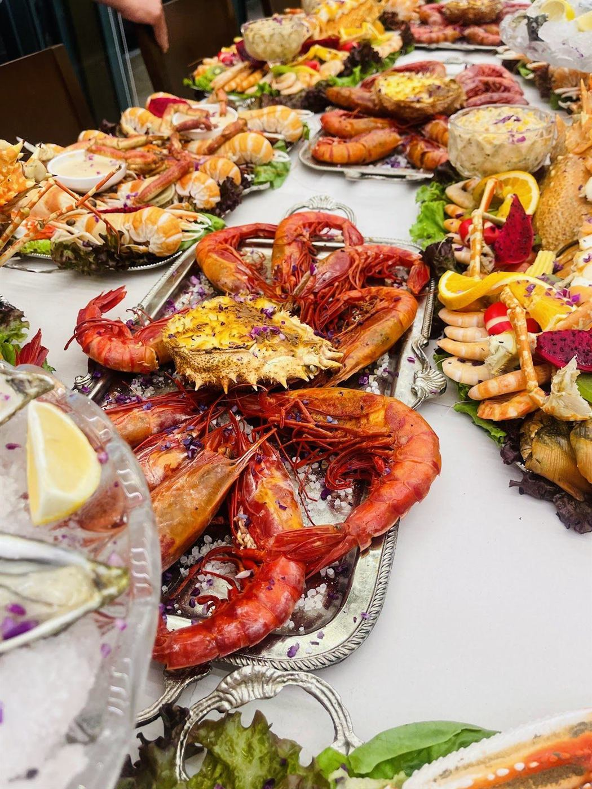
5 m
Cerca de la superficie
Pescaíto frito como en el sur de España: boquerones, chanquetes, calamares y puntillitas.
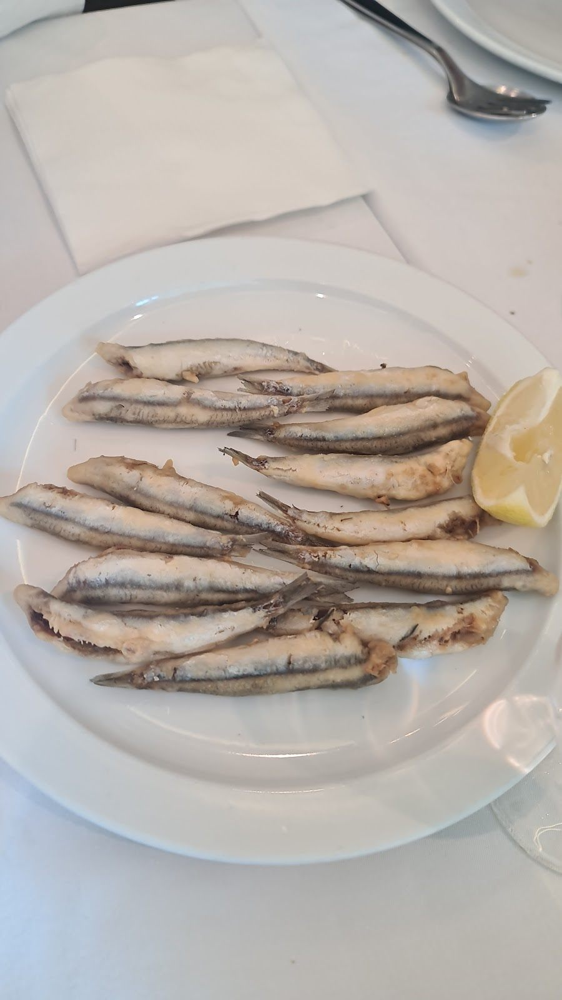
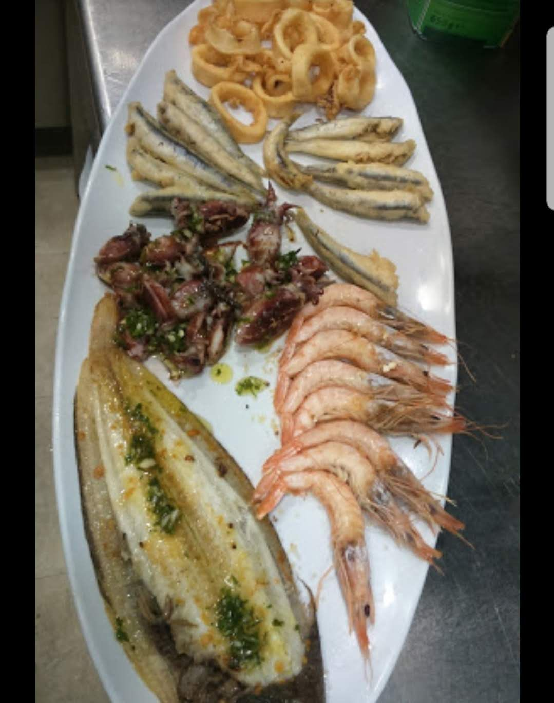
20 m
En la arena
Coquinas y almejas, ostras y conchas finas. Lo que más se repite en las opiniones.
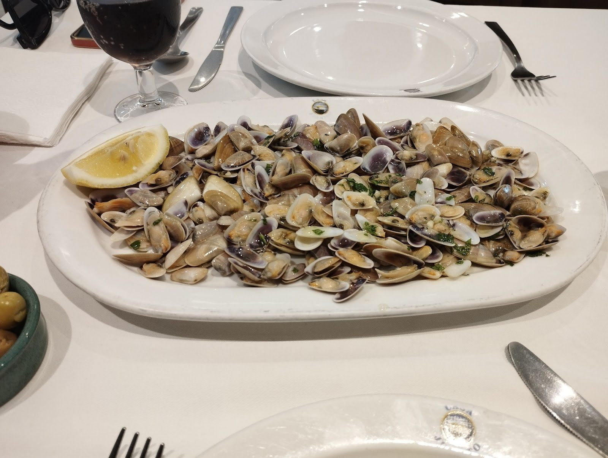
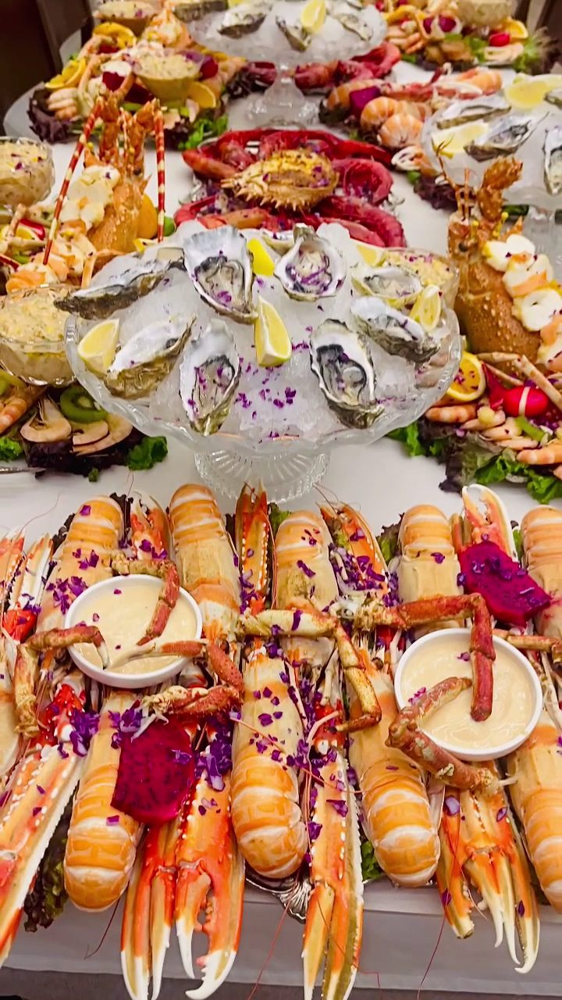
«Lo mejor, las coquinas y el langostino típico de allí.»
Jose A., Google
60 m
Entre las rocas
Pulpo, dorada, lenguado, rape. El pescado del día, a la plancha o frito.
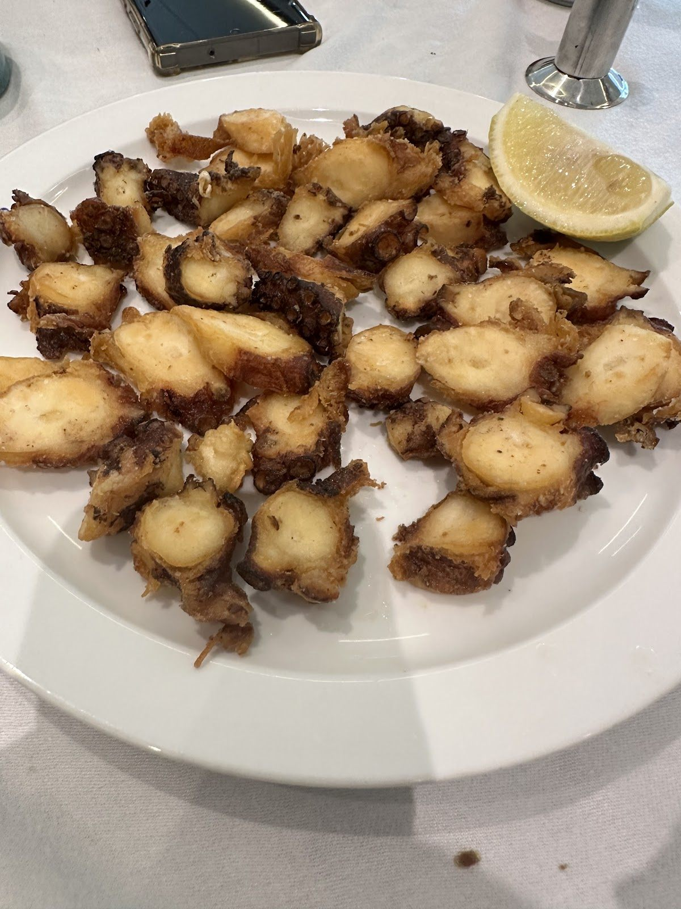
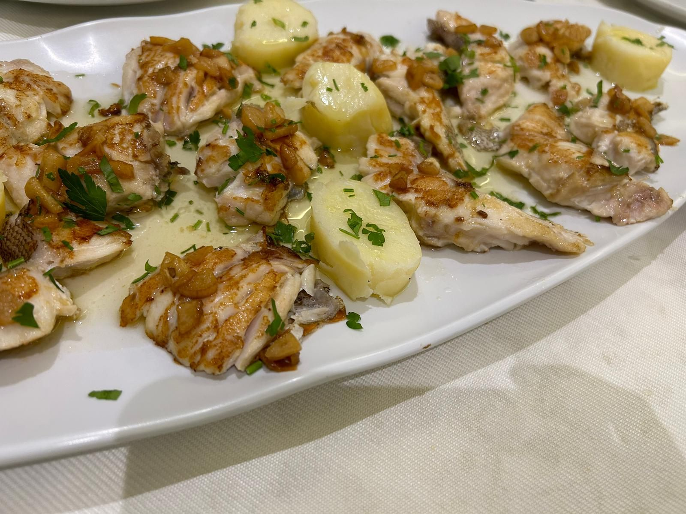
200 m
En el fondo
Cigalas, langostinos y gambas rojas, cocidos en su punto o a la plancha.
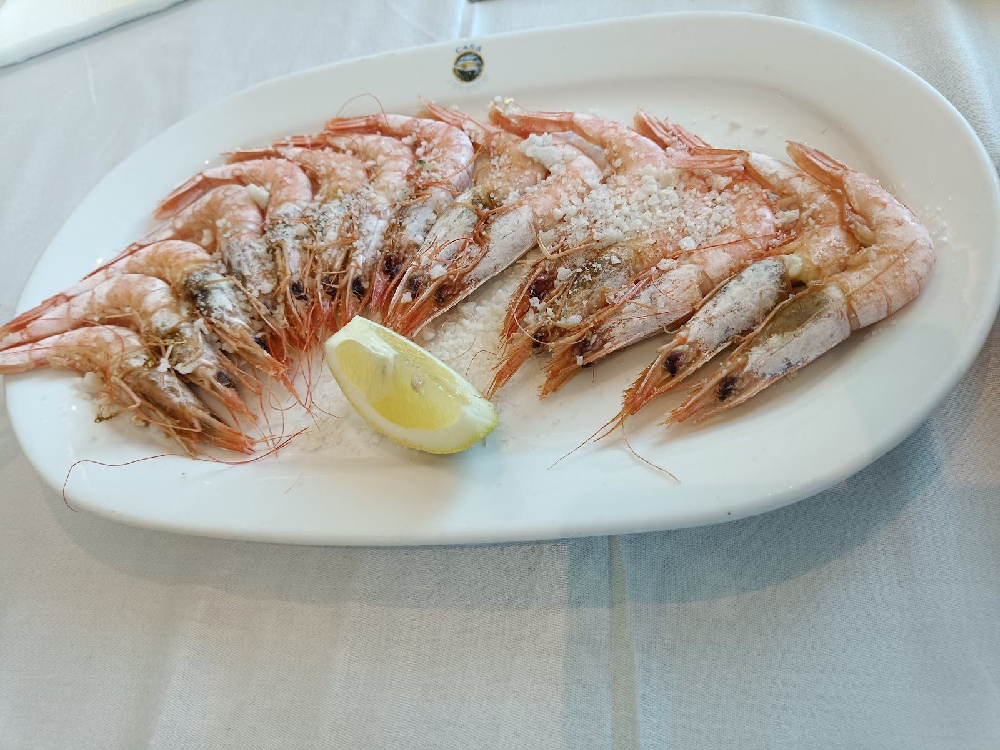
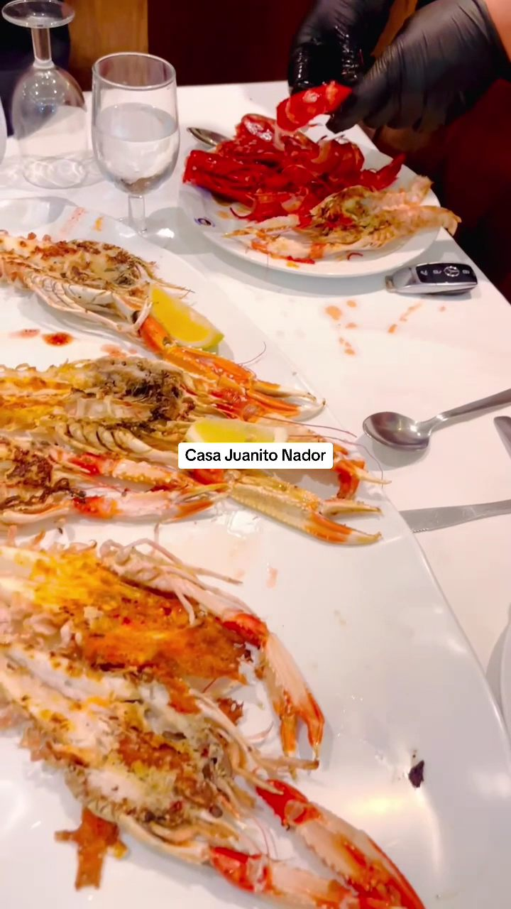
«Las mejores cigalas que he probado.»
Ana Isabel Martín, Google
Sonar
Toca en el fondo para lanzar un ping y descubre lo que hay en nuestra vitrina.
Toca aquí
De vuelta a la superficie: los arroces
Paella de marisco, arroz caldoso, paella con bogavante. Para compartir en el centro de la mesa.
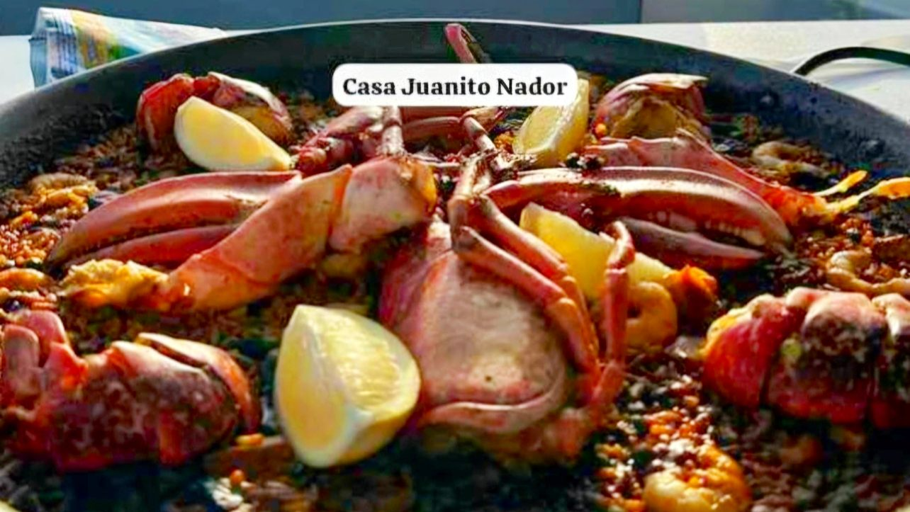
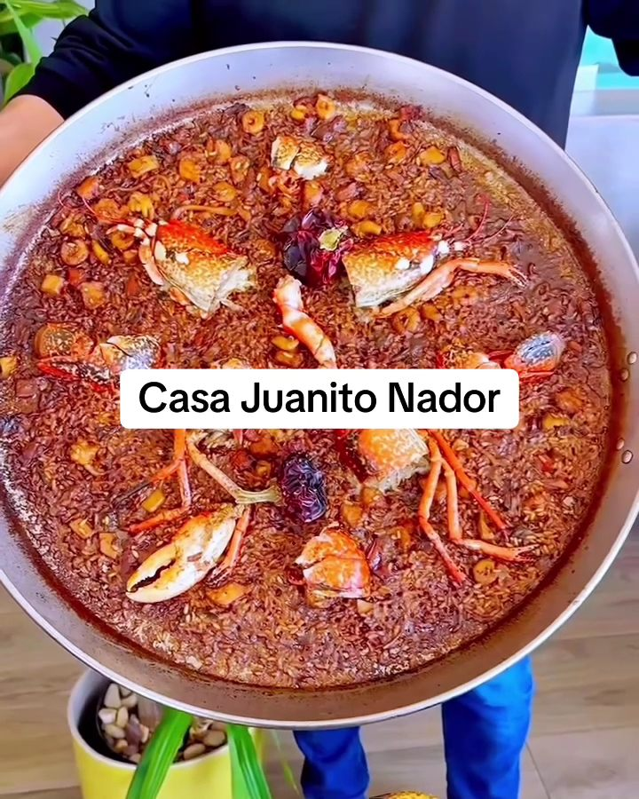
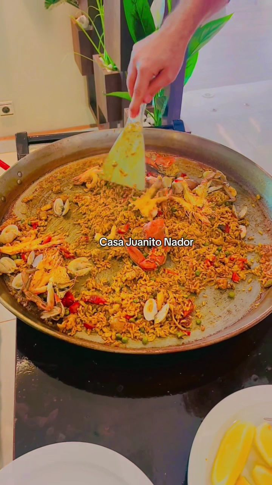
«Una paellita súper, nada que envidiar a una valenciana, y su marisco insuperable.»
Joaquin Bosch, Google
Sin gluten
«Todo adaptado sin gluten, muy a tener en cuenta.» Pregunta en sala.
Visitas de honor
Por esta mesa han pasado ministros, embajadores y un expresidente de Colombia.
La vitrina
El producto fresco se ve nada más entrar, sobre hielo.
Lo dicen en español
425 opiniones en Google
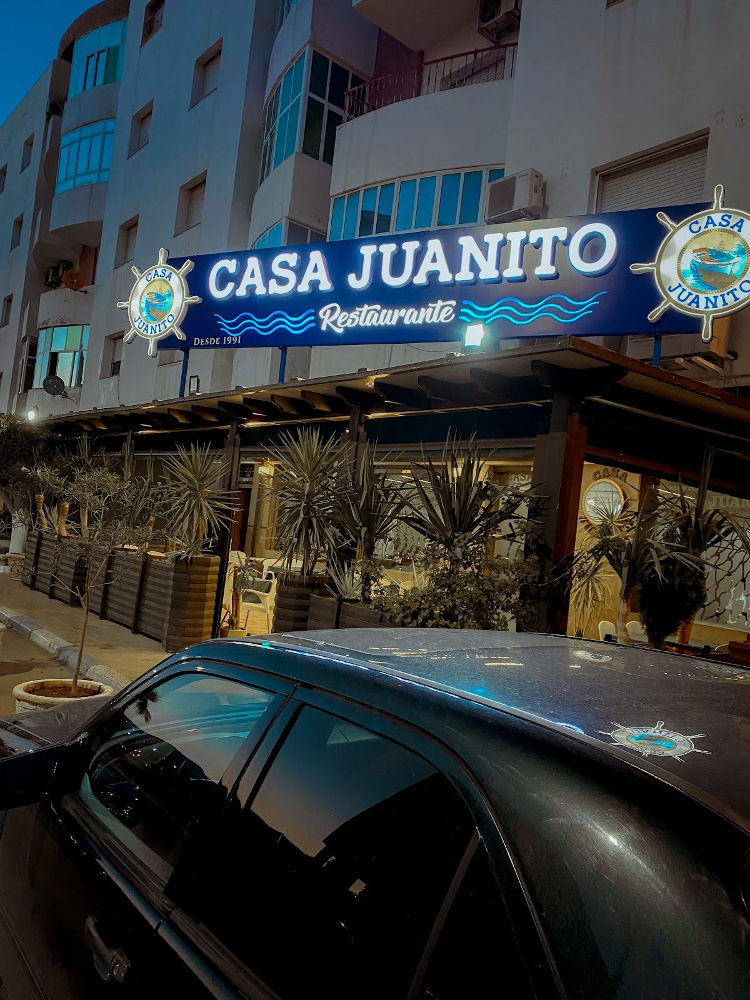
Al final de la playa de Nador
Un poco retirado del centro, en Hay Al Matar. Un taxi y listo.
- Horario
- Todos los días, de 12:00 a 00:00
- Reservas
- 05 36 38 05 00
- @casa_juanito_nador